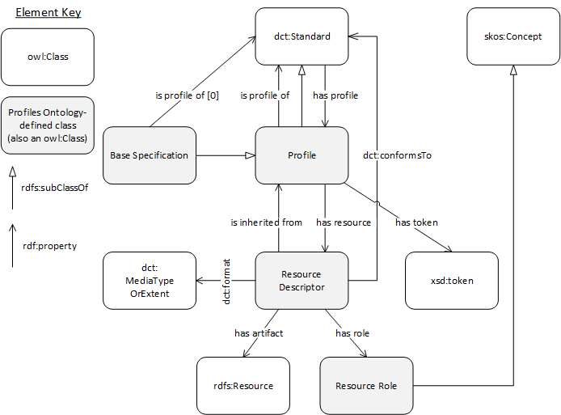
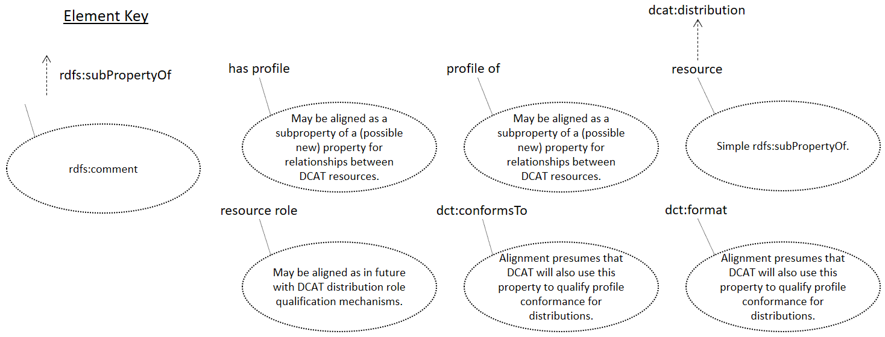

An ontology for listing the set of resources required for a standard or a profile of one or more standards, such as schemas, ontologies, and rules, and for specifying the relationships between them and supporting artefacts, such as controlled vocabularies, validation tools, and guidelines.
The namespace for PROF terms is http://www.w3.org/ns/prof/.
The PROF ontology, defined in OWL and encoded in RDF Turtle, is available at profilesont.ttl.
Family of Documents
This document is part of the output of the Dataset Exchange Working Group (DXWG). All documents from the group
are listed here.
DCAT documents
The DCAT documents are about the revised Data Catalog Vocabulary.
[[vocab-dcat]] (Recommendation), description of the DCAT RDF vocabulary
Profiling documents
These documents give guidance on profiling. Some of the documents are general while some are technology-specific.
Please consult the Profile Guidance [[PROF-GUIDE]] document for an overview of all profiling documents. It is the
recommended starting point.
[[PROF-GUIDE]] (Recommendation), the top-level general profiling guidance document giving an overview of all other documents
[PROF-ONT] (WG Note), this document, a formal ontology describing objects related to profiles
[[PROF-CONNEG]] (Recommendation), Specific guidance on how to negotiate for Internet resource content using profiles
[[PROF-IETF]] (IETFInternet-Draft), HTTP Headers for HTTP content negotiation by profile
Introduction
The profiles ontology provides a structure to describe profiles of information standards. Its
development was triggered by the appearance of multiple profiles of the Dataset Catalog Vocabulary (DCAT)
[[vocab-dcat-20140116]], and also influenced by work on profiles of the Dublin Core metadata vocabulary [[DCAP]].
Profiles of DCAT & DCAP aim to increase interoperability within a specified community of users by introducing
certain limitations on the use of the general vocabulary, such as restrictions on the cardinality of certain
properties, or a requirement to select values of a property from a specified controlled vocabulary. The profiles
have generally been specified through textually-oriented documents.
This ontology provides a more formally structured, machine readable alternative formalization, for these profiles,
and can also be used generally for any profiles of any standards.
This model starts with dcterms:Standard entities
which can either be Base Specifications (a Standard not profiling any other Standard) or Profiles (Standards which
do profile others). Base Specifications or Profiles can have Resource Descriptors associated with
them that define rules for implementing it. Resource Descriptors must indicate the role they
play (to guide, to validate etc.) and the formalism they adhere to (dct:format) to allow for content negotiation.
A vocabulary of Resource Roles are provided alongside this ontology and that list is extensible.
The key words may, must, must not, optional, shall,
shall not, should, should not, recommended, required,
in this document are to be interpreted as described in [[RFC2119]].
Namespaces
The namespace for PROF is http://www.w3.org/ns/prof/.
However, it should be noted that PROF makes use of terms from other vocabularies, in particular Dublin Core [[!DCTERMS]].
PROF itself only defines a minimal set of classes and properties of its own.
A full set of namespaces and prefixes used in this document is shown in the table below.
Prefix
Namespace
dcat
http://www.w3.org/ns/dcat#
dct
http://purl.org/dc/terms/
owl
http://www.w3.org/2002/07/owl#
prof
http://www.w3.org/ns/prof/
profc
http://www.w3.org/ns/prof/constraints/
prov
http://www.w3.org/ns/prov#
rdf
http://www.w3.org/1999/02/22-rdf-syntax-ns#
rdfs
http://www.w3.org/2000/01/rdf-schema#
skos
http://www.w3.org/2004/02/skos/core#
xsd
http://www.w3.org/2001/XMLSchema#
(others)
All other namespace prefixes are used in examples only.
In particular, IRIs starting with "http://example.com" represent some application-dependent IRI [[RFC3987]]
Motivation
Until this ontology, there was no formal W3C method for describing the objects (Internet resources) related to
profiles.
There are a multitude of ways to describe the components within or defining a profile,
such as documents (PDF documents [[PDF]]; any human-readable resources) to offer guidance, constraint languages
from the abstract (Dublin Core's Description Set Profiles [[DCDSP]]) to the concrete (SHACL [[shacl]] & ShEx
[[shex]])) to offer mechanisms for validation of profile instances.
Describing only the components within a profile via documents or constraint languages does not indicate many things
either important or interesting to know about a profile such as:
its dependence on standards or other profiles
inheritance of profile information from the things being profiled, or
related profile resources
guidance documents in addition to formal constraints
equivalent constraints written in different constraint languages for different forms of resource, e.g.
SHACL for RDF and Schematron [[SCHEMATRON]] for XML.
With a mechanism to relate profiles to standards and other profiles, profile hierarchies can be established which
will:
assist with the reuse of existing profiles
one can profile another profile, rather than profiling a base standard and thus inherit that profile's work
this will assist with alignment of multiple specialised resources, and also with reducing the total effort
and information necessary to specify a profile
eventually allow for machine interpretation of profiles and automated profile negotiation with fallback options
if a client requests a profile which a server cannot deliver, a server may be able to instead deliver a
more generic version of the requested resource, using a profile link to the thing it profiles
a client may be able to generate a request that already indicates acceptable fallback options for resources
when the primary requested profile is unavailable
The details of profile negotiation using this ontology, as suggested immediately above, and also other methods,
are explained in detail in the related [[PROF-CONNEG]] document.
Related Work
Conceptual Model

OWL [[owl2-overview]] overview diagram of this ontology
This model starts with dcterms:Standard entities which can either be Base Specifications
(a Standard not profiling any other Standard) or Profiles
(Standards which do profile others). Base Specifications or Profiles can have
Implementation Resource Descriptors associated with them that defines implementing rules for the it.
Implementation Resource Descriptors must indicate the role they play (to guide, to validate etc.)
and the formalism they adhere to (dct:format) to allow for content negotiation. A vocabulary of
Implementation Resource Roles are provided alongside this ontology but that list is extensible.
Vocabulary specification
RDF representation
The PROF vocabulary is available in RDF. Alongside the primary artifact, there is
a set of other RDF files that provide additional information, including:
alignments to other vocabularies, some of which are normative, and others which are for guidance only
additional axioms, which can be useful in some contexts
validating graphs using [[SHACL]]
These other artifacts are linked to throughout this document.
Dependencies
This vocabulary makes use of [[DCTERMS]] properties conformsTo & format in its
normative specification.
This may not be a useful class: documents of any specification can be regarded as a trivial profile, so applications only need to be concerned with Profile conformance
A named set of constraints on one or more identified base specifications or other profiles, including the
identification of any implementing subclasses of datatypes, semantic interpretations, vocabularies, options
and parameters of those base specifications necessary to accomplish a particular function.
This definition includes what are often called "application profiles", "metadata application profiles",
or "metadata profiles"
The semantics of the rdfs:Range means that any resource treated as a base specification can be regarded as a Profile (i.e. may be any specification with an empty set of additional constraints)
This property is to be used to indicate a token that identifies this Profile which should be used when the Profile's URI cannot be used. For potential use in content negotiation. Will require a registry to disambiguate as do Media Type type tokens
A resource that defines implementing rules for a profile. Must indicate the purpose (dct:type) and the formalism (dct:format) used to allow machine mediation of such rules
Profile from inheritance hierarchies defines these constraints. If absent, then the resource applies specifically to the profiles that refer to this resource
Alignment of PROF classes with DCAT 1.1 [[vocab-dcat-2-20180508]] classes. PROF classes are indicated with their rdfs:label text and no namespace prefix.

Alignment of PROF classes with DCAT 1.1 [[vocab-dcat-2-20180508]] properties. PROF properties are indicated with their rdfs:label text and no namespace prefix.
The following table summarieses the mappings shown graphically in Fig. 2 & 3.
PROF element
Mapping property
DCAT element
Notes
prof:resource
rdfs:subPropertyOf
dcat:distribution
dcterms:conformsTo
-
-
Used similarly
dcterms:format
-
-
Used similarly
prof:ResourceRole
rdfs:subClassOf
dcat:Distribution
prof:Profile
rdfs:subClassOf
dcat:Resource
Generic association
Alignment with ADMS
Alignment with OGC/ISO Modular specification model
Privacy Considerations
Appendices
Requirements
This section lists, and then addresses, individual requirements that the Dataset Exchange Working Group
considered important for content negotiation by profile.
Responses to individual requirement Issues listed here are, at the time of the First Public Working Draft of
this document, for demonstration only; to indicate the logic of answers to individual requirements.
These requirement responses may not survive in their current form in later drafts of this document nor may
individual listings of requirements; they may be subsumed into the flowing txt of the document.
RESPONSE FOR 65
RESPONSE FOR 72
RESPONSE FOR 204
RESPONSE FOR 205
This is handled by having URIs for profiles resolve to HTML landing pages and RDF descriptions of the profile
created according to this ontology which then lenk to Resource Descriptors and other Profiles.
RESPONSE FOR 207
This is addressed by a Profile using this ontology to link to other Profiles from which it derives.
RESPONSE FOR 208
This is addressed by Profiles using Resource Descriptors from this ontology which then implement constraint
languages with various Roles such as "Full Constraints".
RESPONSE FOR 209
RESPONSE FOR 210
This is addressed by a Profile implementing a constraint language via a Resource Descriptor and selecting an
appropriate Resource Role for it.
RESPONSE FOR 211
RESPONSE FOR 212
RESPONSE FOR 213
RESPONSE FOR 214
RESPONSE FOR 215
Profiles described using this ontology may indicate that they are a profileOf another Profile.
RESPONSE FOR 216
RESPONSE FOR 217
RESPONSE FOR 222
RESPONSE FOR 255
RESPONSE FOR 264
RESPONSE FOR 268
RESPONSE FOR 272
RESPONSE FOR 279
Using this ontology, a Profile may indicate a Resource Descriptor instance by way of the
resource property. That Resource Descriptor may be a schema that conformsTo a
constraints language, such as SHACL etc.
RESPONSE FOR 280
RESPONSE FOR 284
Using this ontology, all Profile instances are RDF Resources with their own URIs.
Additionally, the token property is given for use with a Profile to be used to identify it
where use of a full URI is not possible, such as within HTTP Query String Arguments.
RESPONSE FOR 286
Following relationships from a profile defined using this ontology, a person or machine may discover either
Resource Descriptor resources describing any sort of document relevant to the profile or other
Profiles.
RESPONSE FOR 287
RESPONSE FOR 288
Graph navigation of profiles' information described using this ontology is supported by its RDF mechanics.
An instance of a resource claiming adherence to an instance of a Profile might indicate its adherence
by using the dct:conformsTo property.
Additional Issues
This section will be removed in a later version of this document.
Additional Issues related to this document and not yet placed within it are listed at the: